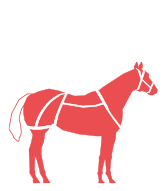
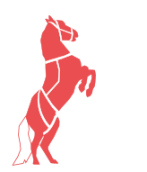
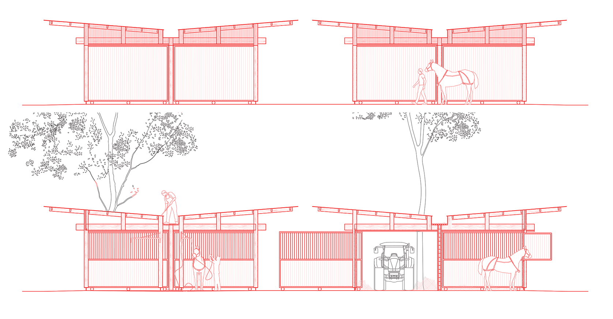
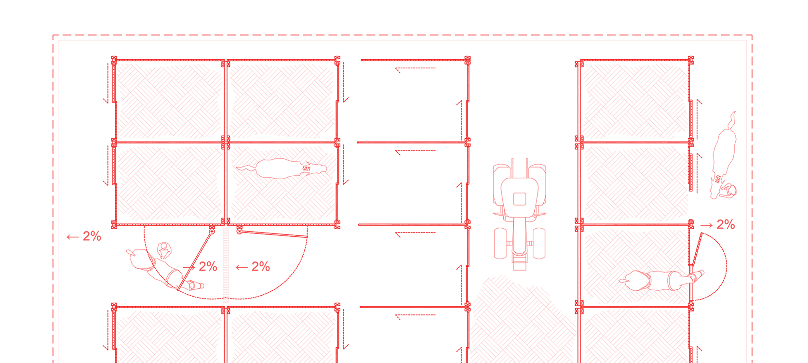

pérennisation des infrastructure de l'hippodrome de Saumur
client : agglomération Saumur Val de Loire
avec : atome saumur
date : février 2026
budget : 1.9M€
type : équipement
Suite à l'acquisition du site historique de l'hippodrome de Saumur par l'agglomération et la création d'une SPL avec délégation de service public, le projet vise à assurer une rentabilité financière de l'opération, notamment en améliorant la capacité d'accueil du site lors et hors des périodes de compétition. Ce site arboré de 160 hectares sert aussi de rendez-vous pour les promeneurs et la qualité naturelle de ce paysage encourage la location à des particuliers ou des entreprises non-équestres pour profiter de son environnement.
Le projet comporte trois composantes : la construction d'écuries comptant près de 200 boxes pérennes et les plateformes stabilisées pour l'installation d'une centaine de démontables supplémentaires ; la réalisation d'une salle de réception de 300m² pouvant être mise à disposition de publics variés ; la création d'un pailler couvert abritant aussi les engins du site et y permettant l'entretien et la construction des divers obstacles nécessaires aux courses hippiques.

Les écuries sont construites en bois (charpente et bardage), sous une couverture économique de type bac acier ondulé. L’intérêt d’une telle structure légère est de minimiser les besoins en fondations qui nécessitent toujours une quantité non négligeable de béton. En traitant le sol comme un dallage sur radier et non comme une dalle portée, on limite la profondeur de l’intervention dans le terrain naturel et donc l’impact écologique et le coût de construction.
Les boxes font 3m de haut pour assurer le passage des engins d’entretien et la partie haute des élévations est fermée par un polycarbonate translucide pour faire entrer le plus de lumière au coeur du volume. Les chéneaux rapportés au centre sont sur-dimensionnés pour permettre leur entretien manuel.


La salle de réception inverse le principe architectural des boxes : au lieu d’un socle opaque surmonté d’une charpente transparente, elle propose un socle entièrement vitré sur lequel flotte un volume plein et protecteur.
Le même système de porteurs moisés autour de fermes simples est répété afin de libérer de grandes trames libres qui laissent le regard traverser l’édifice, conservant alors le lien existant entre la carrière du Prince Albert et la forêt derrière le merlon.
Les grands débords de toiture renforcent cette sensation d’abri léger traversant puisqu’ils écartent les façades légères de l’égout, et permettent aussi et surtout d’étendre l’espace d’usage au delà de l’enceinte fermée de l’édifice.


Les écuries s’organisent donc en 5 groupes rassemblant entre 16 et 42 boxes chacun (190 au total). Larges de 26m (en comptant les débords de toiture) ils encadrent la route actuelle sur l’axe nord-est / sud-ouest et s’interrompent au niveau du cheminement perpendiculaire pour créer comme un système de cardo et decumanus qui ordonne la clairière.



La salle de réception s’implante sur le merlon surplombant la carrière du Prince Albert afin d’offrir une vue dégagée sur les compétition y prenant place. La salle prend la forme d'un bâtiment allongé et fin de sorte à rendre traversante la salle de réception et donc d’ouvrir des vues sur la pinède à travers l’édifice.
Cette finesse permet de déployer deux terrasse longitudinale de chaque côté, couverte par des débords de toitures qui protège de la pluie comme des rayons tombants de soleil du matin comme du soir.